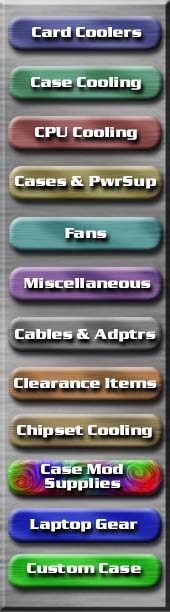
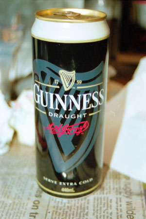

| cooling |
| home page |
|  | We made collectors for the hot side of the 37W and 52W peltiers out of copper and silver. . Our goal was to be able to do this outside of a computer system with a more stable environment and heat source than a CPU. This project was inspired by Ian, at 2CoolTek who was one of the first to develop a Test System outside of a computer. A 22-Watt peltier to test graphics and chipset coolers. |
|
|  | Now's the time to buy one new or build your own Xbox or PS2 bundle. Pre-order Warcraft III Collector's EditionLike Warcraft III. Build your own Game Boy Advance bundle, complete with the system and your choice of games and other accessories. Build Your Own Video Games Store Team up with Amazon. European customers can find a complete selection of computer and video games in our Amazon. |